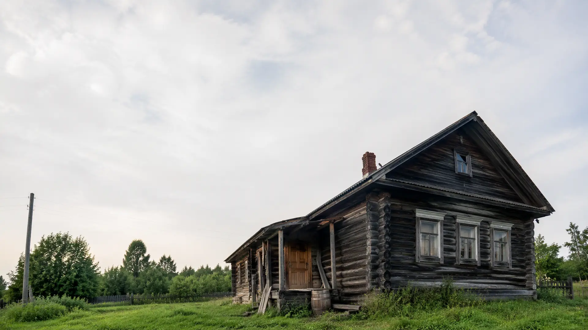
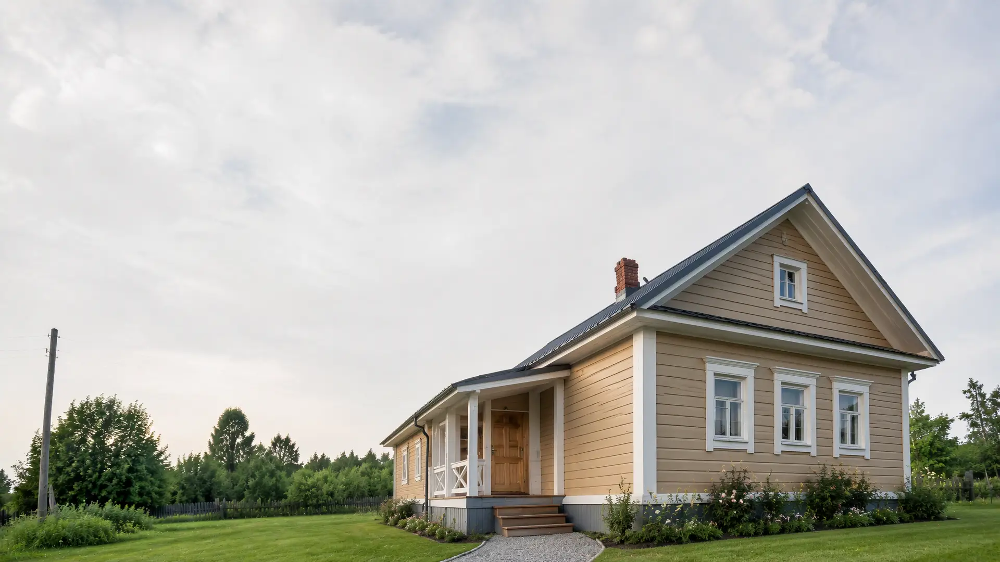
Реконструкция деревянных домов в Перми и крае – каждый этап принимаете сами
Восстанавливаем старые дома от фундамента до кровли: венцы, фасад, окна, утепление. Смета фиксируется в договоре до начала работ. Свои бригады, личный контроль от замера до сдачи.
Работы от 1 500 ₽ за м² по типовым объектам. Точная смета после бесплатного выезда. Ответ в течение часа с 9 до 20.
С 2012 года – это основное направление нашей работы
Пять глав, пять актов приёмки. Каждая глава – один вид работ: что делаем, сколько стоит и как принимаете.
Обследование и смета
Первый этап и первый документ. Смотрим дом, называем работы и цену письменно – до начала, а не по ходу.
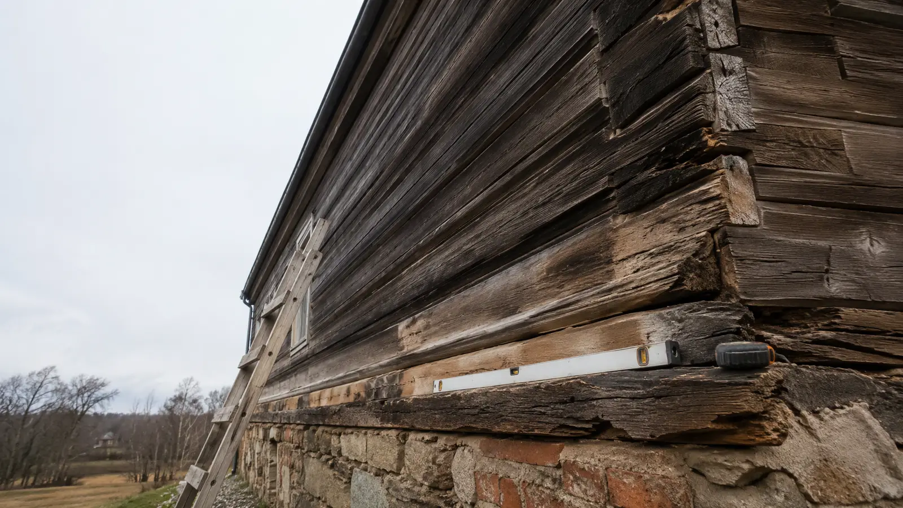
Сначала смотрим дом, потом называем цену
Приезжаем на участок, проверяем фундамент, венцы, стены и кровлю, замеряем перекосы. По результатам – смета с перечнем работ: что чиним, в каком порядке и сколько стоит каждая позиция. Выезд по Перми и краю бесплатный.
- Что в этапе
- Осмотр фундамента и венцов, проверка крыши, замеры перекосов, дефектовка с фото.
- Смета
- Фиксируется в договоре до начала работ. Доплаты – только по согласованию, письменно.
- Ответ
- На связи с 9 до 20. Если не ответили сразу – перезвоним в течение часа.
Венцы и фундамент
Сгнивший нижний венец – причина просевших углов и перекошенных дверей. Поднимаем дом домкратом и меняем то, что сгнило.
Замена венцов и гнилых участков стен
Поддомкрачиваем дом, вырезаем сгнившее, ставим новый венец из сухого бруса. От 850 ₽ за м², объём называем до начала работ.
Перекосы убираем домкратом
Поднимаем дом, выравниваем и укрепляем фундамент – в том числе на сваях. Сколько и что меняем – решает смета, а не «посмотрим на месте».
Уровень в руках – у всех
Принимаете этап вместе с нами: углы по горизонтали, зазоры, крепёж, фото. Подписали акт – пошли дальше.
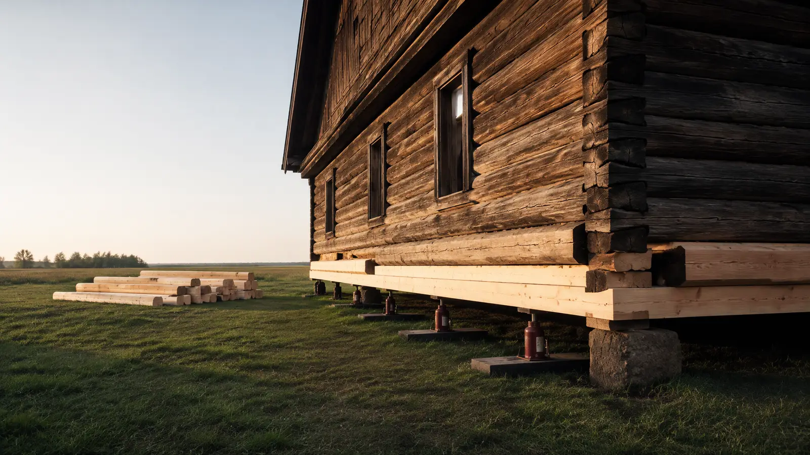
Кровля
Течёт или просела – чиним крышу целиком: стропила, утепление, покрытие, водосток. После этого дом закрыт от дождя.
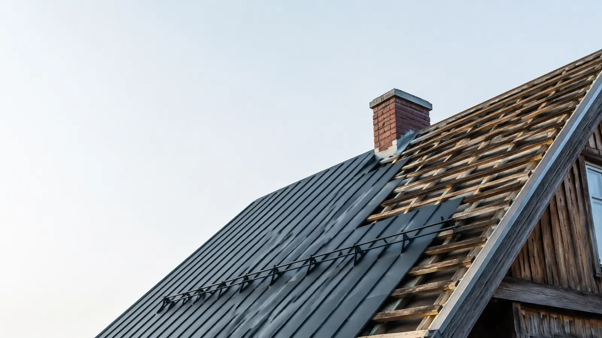
Крыша, которая не течёт
Разбираем проблемный участок или крышу целиком, меняем гнилые стропила, укладываем утепление и новое покрытие. Кровельные работы от 800 ₽ за м²; снегоудержатели и водосток – отдельными строками сметы.
- Что в этапе
- Стропила, обрешётка, утепление, покрытие, примыкания к трубе, водосток.
- Срок
- По договору. Материалы закупаем до начала работ, чтобы не стоять и не ждать доставку.
- Приёмка
- Проливка кровли водой вместе с вами, фото каждого ската в акт.
Фасад и окна
Утепляем, конопатим, обшиваем: сайдинг, блок-хаус, имитация бруса. Новые окна с обсадой – чтобы дом был тёплым и ровным.
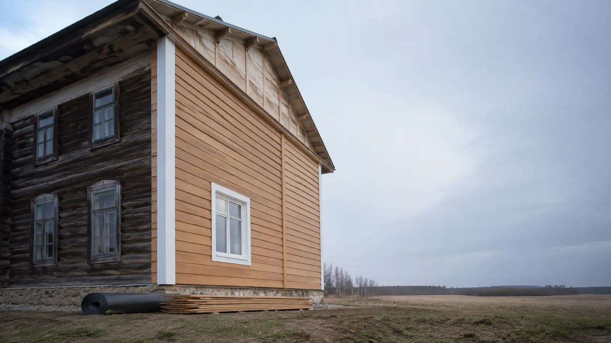
Фасад, окна и тепло
Утепление и конопатка стен, ветрозащита, обшивка сайдингом, блок-хаусом или имитацией бруса, новые окна с обсадой и окосячкой. Обшивка от 930 ₽ за м², обсада и окосячка – отдельной строкой.
- Что в этапе
- Утепление, конопатка, ветрозащита, обшивка, окна, обсада и окосячка, отливы.
- Материалы
- Марка, цвет и объём обшивки фиксируем в смете до закупки – привезём то, что согласовали.
- Гарантия
- На монтаж сайдинга – 1 год по договору. Гарантийные сроки на каждый вид работ – в договоре.
Один и тот же дом
Слева – дом каким он пришёл к нам. Справа – каким мы его сдали. Двигайте ползунок.
Снято одним кадром: ракурс, свет и участок совпадают, поэтому видно каждое изменение.
Сдача по акту
Последний обход вместе, папка документов и дом, который снова можно любить.
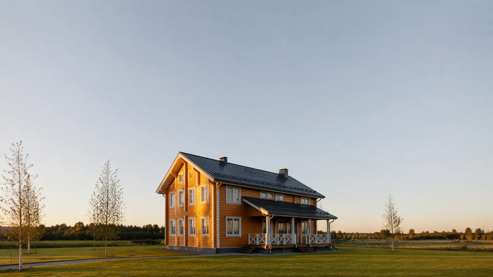
Принимаете дом, а не «почти готово»
Финальный обход вместе: проверяем каждый узел по смете – от венцов до водостока. Замечания устраняем до подписания. Акт сдачи, документы, гарантийные сроки по договору.
- Документы
- Договор, смета, акты по видам работ, паспорта на материалы, гарантийные обязательства.
- Гарантия
- По договору на каждый вид работ. Приезжаем по заявке, а не «после сезона».
- Оплата
- Этапами, после приёмки каждого вида работ по акту. Никаких «доплат по факту».
Дома после реставрации: что обновили и как теперь выглядят.
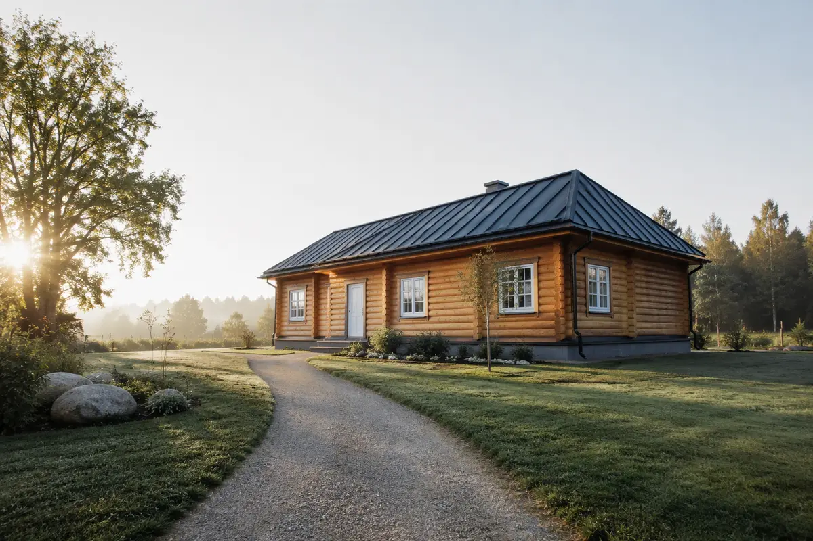
5.2Дом после замены кровли и обшивки фасада 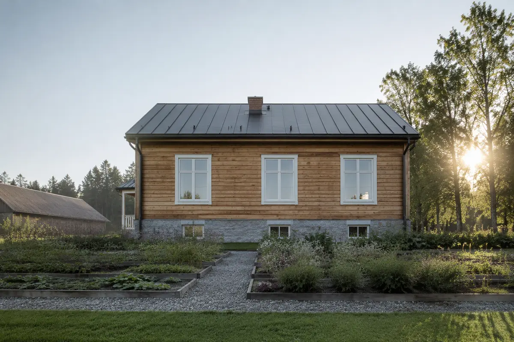
5.3Дом после подъёма и замены венцов 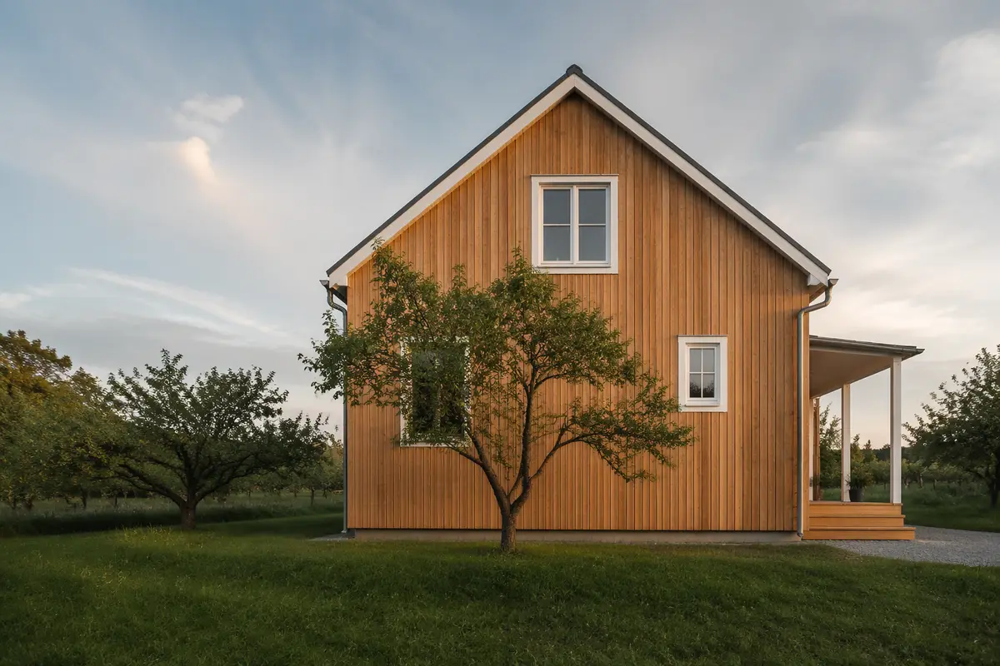
5.4Фронтон после обшивки и новых окон
Пять глав прочитали. Дальше отзывы и состав сметы, а выезд на участок можно назначить уже сейчас: от 1 500 ₽ за м² работ.
Отзывы
Как есть, со страницы «Артель мастеров» на Авито: имя, дата, оценка. Страница открыта, проверить можно за минуту.
Что о нас говорят клиенты
-
«Огромное спасибо Ильдару и всей команде! Вы просто кудесники, лекари деревянных домов… Не верилось, что из этого вообще что-то может получиться! Основное – фундамент, пол, крыша – уже всё новое!»
-
«Просел угол дачного дома, все подняли, установили сваи. Все сделано за 2 дня, как обещали. Очень рекомендую, все честно и прозрачно.»
-
«Приехали, оценили, за 2 дня подняли дом, заменили венцы и восстановили обшивку на доме и пол на веранде. Не дорого и качественно. Рекомендую на 200%.»
Тексты отзывов приводим без правок, как опубликованы на Авито. Рейтинг и число отзывов – по странице продавца.
Что входит в смету
Смета – приложение к договору: работы и материалы строками с ценами, а не «ремонт дома, одна штука». Итог фиксируется до начала, меняется только допсоглашением.
- 01
Выезд и обследование
Выезд по Перми и Пермскому краю – бесплатно. Обследование крыши и фундамента – от 1 000 ₽, подробности в смете.
- 02
Смета и договор
Перечень работ, цены за м², сроки, график оплаты этапами. Фиксируется в договоре, без скрытых платежей и сюрпризов.
- 03
Работы по видам
Замена венцов – от 850 ₽/м², кровля – от 800 ₽/м², обшивка фасада – от 930 ₽/м², обсада и окосячка – от 700 ₽. Каждый вид – отдельной строкой.
- 04
Материалы
Марки, сечения и объёмы – в спецификации к смете. Закупаем сами и отчитываемся чеками, чтобы работа не вставала.
- 05
График и акты
Работы идут в очерёдности из сметы, каждый вид принимаете по акту. Оплата – после приёмки, не вперёд.
- 06
Уборка и вывоз
После сдачи вывозим строительный мусор, участок оставляем чище, чем приняли.
- 07
Что не входит
Подключение к сетям и ландшафтные работы – отдельным списком. Чего не берём – скажем прямо на обследовании, до подписания.
- 08
Ориентир по работам
Ремонт и восстановление дома – от 1 500 ₽/м² работ. Точная сумма – в смете после бесплатного выезда на участок.
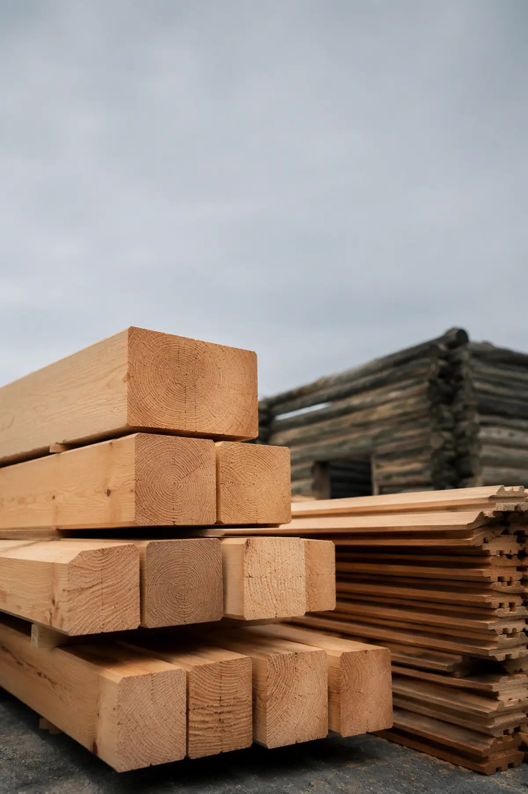
Начнём с бесплатного выезда
Работы от 1 500 ₽ за м². Точная смета – после выезда: по состоянию дома и перечню работ. Смета фиксируется в договоре.
- 01
Заявка
Форма на этой странице. Перезвоним в течение часа в рабочее время.
- 02
Выезд на участок
Смотрим дом, называем перечень работ. По Перми и Пермскому краю – бесплатно.
- 03
Смета
Строки с ценами за м². Отвечаем на вопросы и правим до подписания договора.
- 04
Договор и работы
Смета в приложении, сроки и гарантии прописаны, работы идут этапами с актами.
На связи с 9 до 20. Если не ответил сразу – перезвоню в течение часа.

Оставьте заявку – перезвоним, уточним, что с домом, и договоримся о выезде. Бесплатно и ни к чему не обязывает.